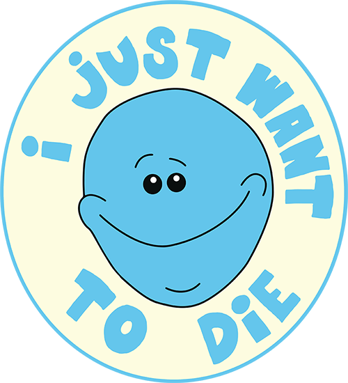

<mat-toolbar color="primary">
  
  <span class="spacer"></span>
  <span>Rick & Morty App</span>
  <span class="spacer"></span>
  <button
    *ngFor="let button of menuButtons"
    [routerLink]="[button.route]"
    mat-button
  >
    {{ button.text }}
  </button>
</mat-toolbar>
